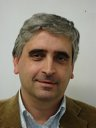
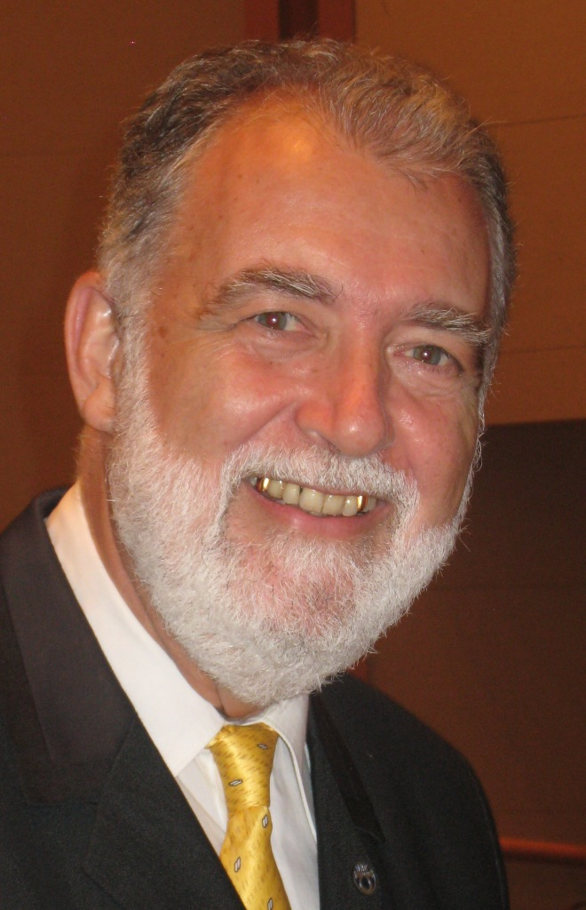
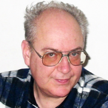

Alessandro Casavola  Since 1998 he is with the Department of Electronics, Informatics and Systems (DEIS), DIMES (Department of Informatics, Modelling, Electronics and Systems Engineering) since 2013 of the University of Calabria: from 1998 to 2005 as an Associate Professor in Control Engineering and since 2005 as a Full Professor. From 2005 to 2011 he was, and currently is, the Coordinator of the master degree (Laurea Magistrale) in Control and Automation Engineering of the University of Calabria. Click to view more details!
Alessandro Casavola (Florence, 1958) received the Laurea degree in Electrical Engineering from the University of Florence, Italy, in 1986 and the Ph.D degree in Systems Engineering from the University of Bologna, Italy, in 1990. From 1990 to 1996 he was the Computing Center and Network Administrator at the Department of Mathematics U.Dini of the University of Florence, Italy. Since 1998 he is with the Department of Electronics, Informatics and Systems (DEIS), DIMES (Department of Informatics, Modeling, Electronics and Systems Engineering) since 2013, of the University of Calabria: from 1998 to 2005 as an Associate Professor in Control Engineering and since 2005 as a Full Professor. From 2005 to 2011 he was, and currently he is, the Coordinator of the master degree (Laurea Magistrale) in Control and Automation Engineering of the University of Calabria. He has participated and leaded research units in many methodological and applied research projects, funded by national government agencies and private industries. His research activity is testified by more than 300 scientific publications, 100 of which on prestigious scientific journals. His current research interests include constrained predictive control, fault tolerant control, net worked control systems, supervision and coordination of large-scale networked dynamic systems. Since 2009 he serves as a Subject Editor for the International Journal of Adaptive Control and Signal Processing and, since 2017, he is an Associate Editor of the IEEE Control Systems Letters. He has been the Program Chair of IEEE ISIC 2014 Symposium (within the IEEE Multi Conference on System and Control (IEEE MSC 2014), held in NICE, France on October 2014. He has served in the International Program Committees of over forty workshops/symposiums/conferences on control engineering including: DPS - International Conference on DIAGNOSTICS OF PROCESSES AND SYSTEMS; ICINCO - International Conference on Informatics in Control, Automation and Robotics; IEEE WCCS - IEEE World Conference on Complex Systems; IADIS - Interfaces and Human Computer; ICSS - Workshop on Industrial Control Systems and Software; SYSTOL -International Conference on Control and Fault-Tolerant Systems; IoTCoMM - International Workshop on Internet of Things: RFIDs, WSNs and beyond; IEEE MED - IEEE Mediterranean Conference on Control and Automation; ACD - Workshop on Advanced Control and Diagnosis; NMPC - IFAC Conference on Nonlinear Model Predictive Control; NECSYS - IFAC Workshop on Distributed Estimation and Control in Networked Systems; INCOM - IFAC Symposium on Information Control Problems in Manufacturing; SAFEPROCESS - IFAC Symposium on Fault Detection, Supervision and Safety for Technical Processes. He has chaired numerous sessions at IEEE CSS and IFAC conferences. He has organized two special issues on the Wiley International Journal of Adaptive Control and Signal Processing ("Networked Control Systems Tolerant to Faults", 2007; "Recent Trends in Adaptive Switching/Mixing Control", 2011) and one on the International Journal of Robust and Nonlinear Control ("Self-Healing Control Architectures and Design Methodologies for LPV Systems", 2013) He is member of the IEEE TCIS (Intelligent Systems) and IFAC TC 6.4 - Fault Detection, Supervision & Safety of Technical Processes. |
Pedro Albertos  Past president of IFAC (the International Federation of Automatic Control) in 1999-2002, IFAC Fellow, IFAC Advisor and Life Senior Member of IEEE, is a world recognized expert in real-time control, leading several projects in the field. Full Professor since 1975, he is currently Emeritus Professor at Systems Engineering and Control Dept. UPV, Spain. Click to view more details!
PRESENTATION: Dealing with Process Disturbances: Different Approaches for their Estimation and Rejection This presentation deals with the problem of disturbance rejection in process control, where disturbances are present. They could be external or generated by model uncertainties. Different types of disturbances are considered and also different approaches are outlined to reject or reduce their effects. Some information about the disturbance may be available. Even they can be measured. After a general introduction about the relevance of disturbances in process control, the most accepted controller design methodologies based on Disturbance Observers and Active Disturbance Rejection approaches are presented and their advantages and limitations when dealing with either non-minimum phase or unstable plants are discussed. The main issues involved in each approach are illustrated by different applications. Some conclusions and comparisons are finally drafted and some open problems are presented. SPEAKER: Instituto Universitario de Automatica e Informatica Industrial - Universitat Politecnica de Valencia, Spain. Pedro Albertos, past president of IFAC (the International Federation of Automatic Control) in 1999-2002, IFAC Fellow, IFAC Advisor and Life Senior Member of IEEE, is a world recognized expert in real-time control, leading several projects in the field. Full Professor since 1975, he is currently Emeritus Professor at Systems Engineering and Control Dept. UPV, Spain. He is Doctor Honoris-Causa from Oulu University (Finland) and Bucharest Polytechnic (Romania). Invited Professor in more than 20 Universities, he delivered seminars in more than 30 universities and research centers. Authored over 300 papers, book chapters and congress communications, co-editor of 7 books and co-author of "Multivariable Control Systems" (Springer 2004) and "Feedback and Control for Everyone" (Springer 2010). This last book has received the Harold Chesnut best text-book award at the past IFAC World Congress in Toulouse (Juy 2017). He is also associated editor of Control Engineering Practice and Editor in Chief of the Spanish journal RIAI. His research interest includes multivariable control and non-conventional sampling control systems, with focus on time delays and multirate sampling patterns. |
Vladimir Răsvan 
PRESENTATION: ..........
This presentation ............
SPEAKER: Full Professor at University of Craiova, Craiova - Department of Automation, Electronics and Mechatronics, Romania.
Vladimir Răsvan (Bucharest Romania, 1945) obtained his engineer degree in 1967 and his PhD degree in 1972, both in Automatic Control from the Polytechnic Institute of Bucharest.
Since 1972 up to 1981 he was involved in applied research on Control of Thermal Power Plants. At the same time he did research on System Theory and Control with particular reference to stability and
control of time delay control systems. In 1982 he joined the University of Craiova, School of Electrical Engineering as associate professor of automatic control. Since 1990 he is full professor of Systems and
Control at the School of Automation, Computers and Electronics of the University of Craiova. He served as Head of the School (Faculty Dean) between 1990-2004 and as Doctoral School Head between 2005-2011.
His scientific activity is certified by more than 100 published papers or book chapters, 7 monographs, and 130 published conference papers, also of more than 20 unpublished memoirs. He was director of
25 multi-annual research projects financed by grant agencies or industrial agents. His actual scientific interests cover such fields as stability and control of linear and nonlinear systems with time delay and 1-D
distributed parameter systems, systems with several equilibria and complex dynamics arising from synchronization.
He is currently member of the editorial board of "Revue Roumaine des Sciences Techniques-Serie Electrotechnique et Energetique" and "Control Engineering and Applied Informatics" both from Romania
and of "St. Petersburg University Vestnik" - Series on Applied Mathematics, Informatics, Control Processes. Between 2001-2006 he was Associate Editor of "European Journal on Control".
He was IP member for various conferences organized by IFAC or IEEE, also General or Program Chair. He was Plenary speaker for various mathematical or engineering conferences, among which IFAC Workshop on Time Delay Systems,
IEEE multi-conference in Toluca (Mexico) or Conference on Differential and Difference Equations with Applications in Slovakia.
Member of the IEEE (Senior member), SIAM, AMS, Head of the Control Systems Chapter IEEE Romania, vice-chairman of the Romanian Society for Automation and Technical Informatics (Romania NMO for IFAC), he is full (acting)
member of the Romanian Academy of Engineering Sciences.